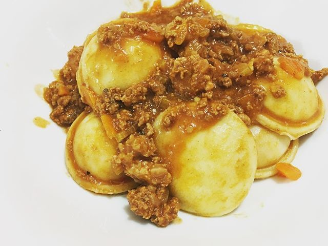

Sorrentinos con salsa Bolognesa
Los sorrentinos fueron creados en Mar del Plata entre los años 1920 y 1930

Lista de ingredientes
- Bolsa de sorrentinos
- Salsa de tomate
- Carne Picada
- Queso rallado
Preparacion
- cortar la carne picada en cuadrados
- Cortar verduras para la salsa y dorarlas
- agregar la carne picada y la salsa
- Tapar hasta que hierva y revolver
- Hervir agua y cocinar los sorrentinos
- Servir en el plato con la salsa y queso rallado
<